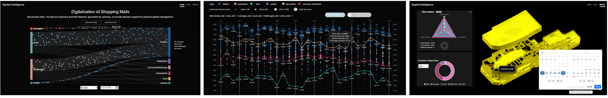

1.Please use CHROME for best performance; 2.Please zoom out your webpage to 100%.
We process data - the flow of customers and their features, generated by cameras, to provide decision support for physical spatial management. Project Team Member : Fei Xiong; Zidong Huang; Zihui Zhang.
Digitalizing is the primary step for the Internet of things, and Spatial Intelligence is utilizing the transformation from images to numeric and time-stamped data to provide service for spatial management. These visualizations provide opportunities to imagine the possible application for imaging tagging and visualizing. In the meanwhile, our visualizations are not only informative but also lucrative for commercial usage. Serving as an assessment and analysis system can provide subjective decision-making suggestions on rent pricing, business type deployment in malls, and customer flow monitoring. Our vision is to let the viewers be more aware of the unattended resources near us and fight for the offline world with the database we are about to establish someday. Read Full Paper, please click here.